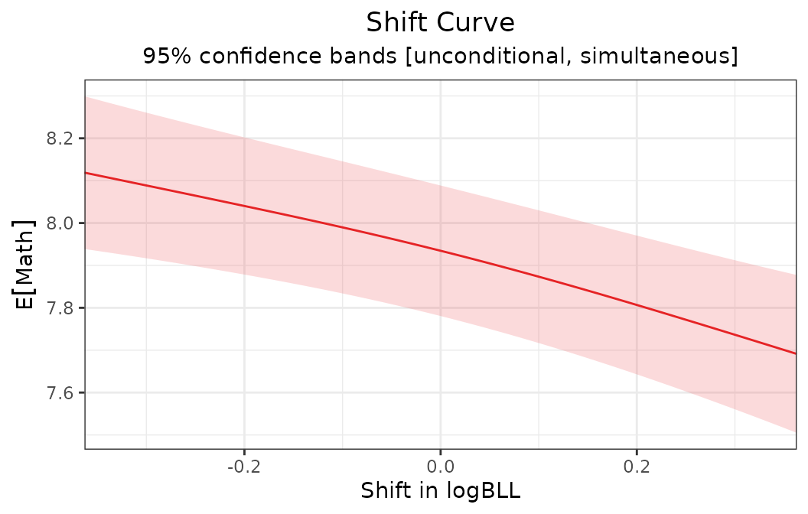
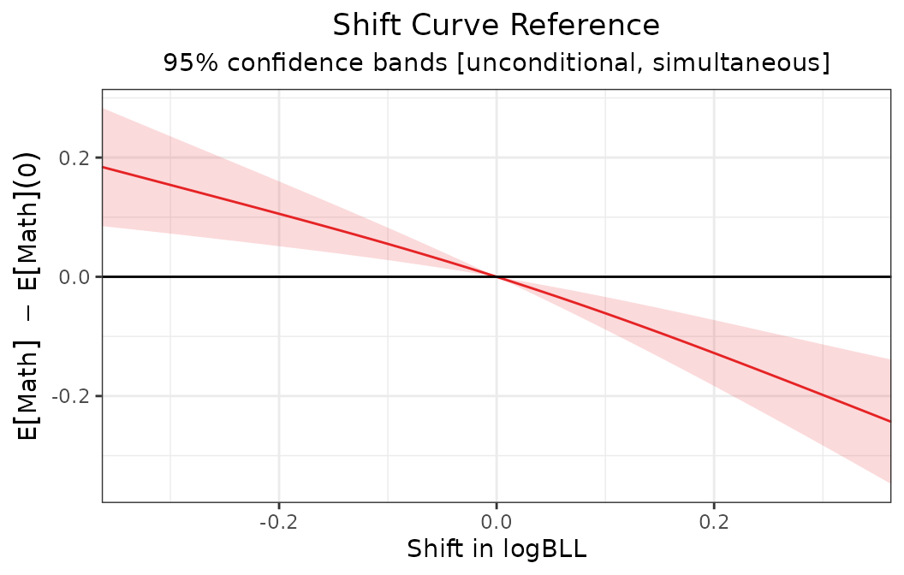
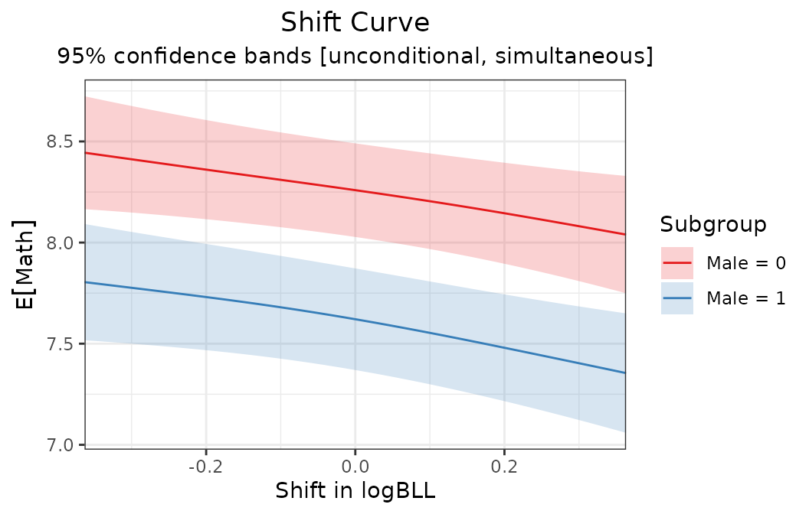
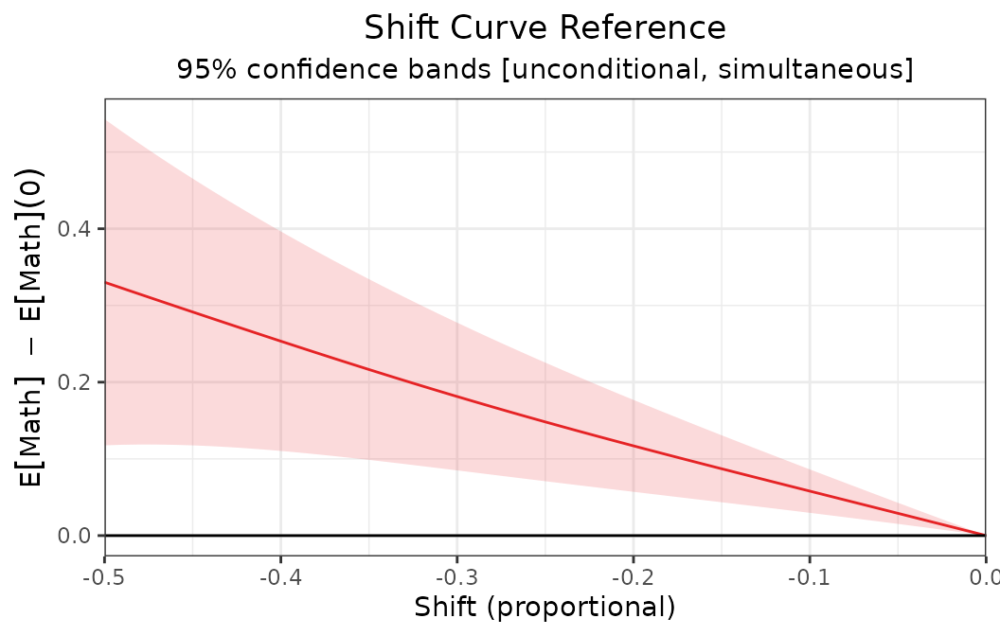
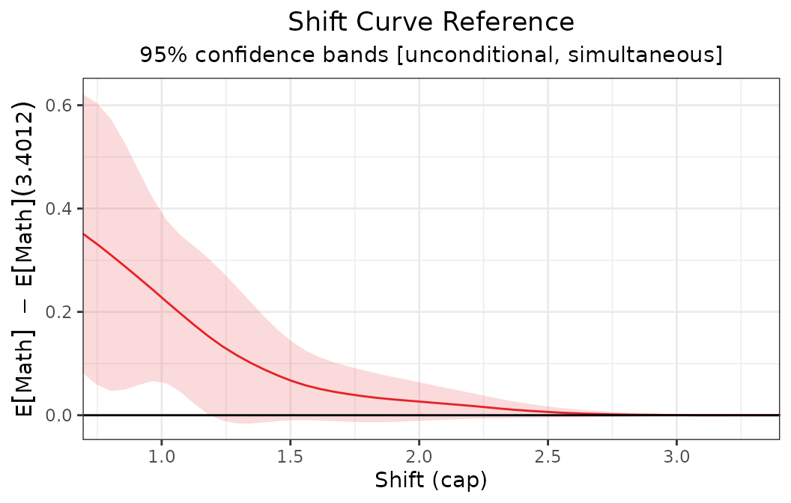

Shift Interventions and Average Derivative Effects
Noah Greifer
2026-11-19
Source:vignettes/shift-effects.Rmd
shift-effects.RmdIntroduction
The average dose-response function (ADRF), \(\theta_\text{ADRF}(a) = E[Y(a)]\),
describes the expected outcome if every unit in the population received
treatment value \(a\). Estimating it
requires that every unit could have received every treatment value in
the range of the ADRF, which is a strong requirement when the treatment
is strongly related to the covariates. For example, if children from
low-income households rarely have low blood lead levels, the ADRF at low
blood lead levels depends on what the outcome model predicts for
low-income children at blood lead levels few such children have, which
involves extrapolation from the model rather than information in the
data (Lundberg and Brand
2026). See vignette("adrftools") for estimating
and characterizing the ADRF itself.
An alternative is to ask what would happen if each unit’s treatment were changed from the value it actually received rather than set to the same value for everyone. Interventions of this kind, which depend on the treatment each unit would otherwise have received, are known as modified treatment policies or shift interventions (Díaz Muñoz and Laan 2012; Haneuse and Rotnitzky 2013). For a function \(g(a, \delta)\) that maps a unit’s observed treatment \(a\) and a shift \(\delta\) to a new treatment value, the shift curve is \[ \psi(\delta) = E[Y(g(A, \delta))] \]where \(A\) is the treatment each unit received. The simplest and most common choice is the additive shift, \(g(a, \delta) = a + \delta\), for which \(\psi(\delta)\) is the expected outcome if every unit’s treatment were increased by \(\delta\) (or decreased, when \(\delta\) is negative). With \(\delta = 0\), every unit receives the treatment it actually received, so \(\psi(0)\) is the mean outcome in the population. Under the usual causal assumptions, the shift curve is identified as \[ E[Y(g(A, \delta))] = E\left[ \mu(g(A, \delta), X) \right] \]where \(\mu(a, x) = E[Y|A = a, X = x]\) is the expected outcome given treatment \(a\) and covariates \(x\) and the outer expectation is over the joint distribution of the treatment and covariates (Haneuse and Rotnitzky 2013). This requires that units could have received treatment values near those they actually received, which is a much weaker requirement than that every unit could have received every value, as long as the shift is small.
The derivative of the additive shift curve at a shift of 0 is the average derivative effect (ADE), \[ \theta_\text{ADE} = \frac{d\psi(\delta)}{d\delta}\Bigr|_{\delta = 0} = E\left[\frac{\partial \mu(A, X)}{\partial a}\right] \]The ADE is the slope of the outcome with respect to the treatment for each unit at the treatment it actually received, averaged over units; it is the change in the mean outcome per unit of an infinitesimal shift in every unit’s treatment. Because it involves only treatment values arbitrarily close to those actually received, it requires positivity only locally, and because it is a single number, it can serve as a summary of the effect of a continuous treatment much as the average treatment effect does for a binary one (Hines et al. 2026).
Shift Curves and the ADE in adrftools
adrftools estimates shift curves using g-computation with
shift_curve(), which works like adrf(): it
takes a fitted outcome model and the name of the treatment and returns
an <effect_curve> object, but its argument is the
shift rather than the treatment. All functions that operate on effect
curves work with shift curves as well, including plot(),
summary(), reference_curve(),
curve_contrast(), curve_projection(), and
amef(). ade() computes the ADE from a shift
curve.
Inference uses the same machinery as adrf(). By default,
standard errors are unconditional, accounting for sampling from the
population as well as for estimation of the outcome model (Hansen and Overgaard
2024). Because the shifted treatment of each unit depends on
the treatment it received, the unconditional standard errors account for
the sampling of the treatment along with that of the covariates. The ADE
can also be computed with marginaleffects::avg_slopes()
(Arel-Bundock et al.
2024), which by default treats the sample as fixed; we
compare the two below.
This Guide
In this guide, we will walk through an analysis of the effect of
blood lead levels on cognitive test scores using shift interventions.
First we’ll fit the outcome model and compute and plot the shift curve.
Next we’ll consider the size of the shift and compute the effects of
specific shifts and the ADE, and compare the ADE to the summaries of the
ADRF described in vignette("adrftools"). Then we’ll examine
subgroup differences and other kinds of shifts, and finally other
scenarios that require special attention. First we’ll load
adrftools using library().
The Data
We use the nhanes3lead dataset that comes with
adrftools, a subset of the NHANES III survey, also used in
vignette("adrftools").
data("nhanes3lead")The treatment is logBLL, the natural log of blood lead
levels in μg/dL, and the outcome is Math, the score on the
WISC Math test. Covariates include Age, Male,
Race, PIR, Enough_Food,
Smoke_in_Home, Smoke_Pregnant, and
NICU.
Analysis
We will use adrftools to answer the following research questions:
- How would the average Math score change if every child’s blood lead level were shifted up or down?
- What is the effect of a small change in blood lead levels, summarized as a single number?
- How does that number relate to the ADRF?
- Do the effects of shifts in blood lead levels differ between boys and girls?
- What would happen if blood lead levels were reduced by a given proportion or capped at a given level?
Fitting the outcome model
As with the ADRF, the first step is to fit a flexible outcome model,
whose coefficients we will not interpret. Below, we use
lm() to fit a linear regression of Math on
logBLL, entered as a natural cubic spline with 5 degrees of
freedom, the covariates, and their interactions, allowing the
relationship to differ by Male. This is the same model used
in vignette("adrftools").
Computing and plotting the shift curve
To compute the shift curve, we supply the outcome model to
shift_curve() along with the name of the treatment.
sc_bll <- shift_curve(fit, treat = "logBLL")Printing the object displays information about the shift curve.
sc_bll
## An <effect_curve> object
##
## - curve type: shift curve
## - response: Math
## - treatment: logBLL
## - shift: additive
## + range: -0.3631 to 0.3631 (-0.5 to 0.5 SD)
## - inference: unconditionalBy default, the shift is additive
(shift_fun = "additive"), and the shift curve is computed
for shifts from half a standard deviation of the treatment below to half
a standard deviation above the treatment each unit received. The
standard deviation of logBLL is 0.726, so the shifts range
from -0.363 to 0.363 on the log scale. The range is printed in the units
of the treatment and, in parentheses, in standard deviations.
Like an ADRF, a shift curve is a function. To display the estimates
at shifts of -.3, 0, and .3, we supply those values to the
shift argument and call summary() on the
output:
sc_bll(shift = c(-.3, 0, .3)) |>
summary()
## Shift Curve Estimates
## ─────────────────────────────────────────
## shift Estimate Std. Error CI Low CI High
## -0.3 8.089 0.0748 7.921 8.256
## 0.0 7.935 0.0670 7.784 8.085
## 0.3 7.736 0.0765 7.565 7.908
## ─────────────────────────────────────────
## Inference: unconditional, simultaneous
## Confidence level: 95% (t* = 2.24, df = 2401)The estimate at a shift of 0 is the mean of the predicted outcomes at
the treatment values the children actually received, which, for a linear
model with an intercept, is the mean of Math in the sample.
The estimate at a shift of -.3 is the expected mean Math score if every
child’s logBLL were .3 lower than it was, which corresponds
to blood lead levels about 26% lower.
We can plot the shift curve with plot():
plot(sc_bll)
The x-axis is the shift and the y-axis is the expected outcome under that shift. As with the ADRF, the shaded region is the 95% simultaneous confidence band. The shift curve slopes downward, indicating that shifting every child’s blood lead level upward would lower average Math scores and shifting it downward would raise them.
Choosing the size of the shift
The size of the shift is controlled by the shift
argument. A single number s requests shifts from
-s to s; for an additive shift, it is in
standard deviations of the treatment, so the default
shift = .5 means half a standard deviation in each
direction. Two numbers request the lower and upper bounds of the shift
in the units of the treatment; for example,
shift = c(-1, 0) requests shifts from a decrease of 1 to no
change.
The advantage of shift interventions over the ADRF holds only for
small shifts. A large shift moves some units to treatment values that
units like them rarely receive, at which point the shift curve depends
on extrapolation from the outcome model just as the ADRF does (Lundberg and Brand
2026). One simple check is how many units are moved beyond
the range of the observed treatment values. Below, we compute the
proportion of children whose logBLL would fall below the
smallest observed value or above the largest observed value under the
largest shifts in the default range:
s <- .5 * sd(nhanes3lead$logBLL)
# Proportion moved below the smallest observed value
mean(nhanes3lead$logBLL - s < min(nhanes3lead$logBLL))
## [1] 0.1082904
# Proportion moved above the largest observed value
mean(nhanes3lead$logBLL + s > max(nhanes3lead$logBLL))
## [1] 0.003570012About 11% of children would be moved below the lowest observed blood lead level by the largest downward shift, because many children have blood lead levels near the minimum, whereas very few would be moved above the highest one. Estimates for large downward shifts therefore rely on extrapolation for some children, which suggests focusing on smaller shifts in that direction. This check concerns the marginal distribution of the treatment; a shift can also move units to values that are within the observed range but rare among units with similar covariates. Ideally, the size of the shift should be chosen to be substantively meaningful (e.g., corresponding to a feasible intervention) and small relative to the variation of the treatment among units with similar covariates.
The grid of shifts is treated as fixed in computing standard errors,
as the range of the ADRF is in adrf(), even though, when
shift is a single number, it depends on the standard
deviation of the treatment in the sample.
Effects of shifts
The shift curve gives expected outcomes under each shift; the effect
of a shift is the difference between the expected outcome under that
shift and that under no shift. We can compute these differences using
reference_curve() with reference = 0:
sc_bll_ref <- reference_curve(sc_bll, reference = 0)Plotting the reference curve displays the effect of each shift, with a horizontal line at 0 indicating no effect.
plot(sc_bll_ref)
The confidence band narrows near a shift of 0, because the effects of small shifts are estimated more precisely. Below, we estimate the effects of a few specific shifts:
est_ref <- sc_bll_ref(shift = c(-.3, -.1, .1, .3))
summary(est_ref)
## Shift Curve Reference Estimates
## ──────────────────────────────────────────────────────────
## shift Estimate Std. Error t P-value CI Low CI High
## -0.3 0.1541 0.0359 4.289 < 0.0001 0.0741 0.2341
## -0.1 0.0552 0.0120 4.607 < 0.0001 0.0285 0.0818
## 0.1 -0.0612 0.0120 -5.083 < 0.0001 -0.0879 -0.0344
## 0.3 -0.1982 0.0373 -5.313 < 0.0001 -0.2812 -0.1151
## ──────────────────────────────────────────────────────────
## Inference: unconditional, simultaneous
## Confidence level: 95% (t* = 2.226, df = 2401)
## Reference: shift = 0 | Null value: 0For example, decreasing every child’s logBLL by .3 would
increase the average Math score by an estimated 0.154 points, with a 95%
simultaneous confidence interval excluding 0.
To test whether any shift in the range changes the average outcome,
we can use summary() on the shift curve itself, which tests
whether the shift curve is flat (see vignette("adrftools")
for details on these tests):
summary(sc_bll)
## Omnibus Curve Test
## ───────────────────────────────────────────────────────
## H₀: shift curve is flat for values of shift between
## -0.3631 and 0.3631
##
## P-value
## < 0.0001
## ───────────────────────────────────────────────────────
## Computed using the Imhof approximation (the
## saddlepoint approximation for p-values below .0001)The small p-value indicates that at least some shifts in the range change the average Math score. We can also test whether the shift curve is linear in the range of shifts:
summary(sc_bll, hypothesis = "linear")
## Omnibus Curve Test
## ───────────────────────────────────────────────────────
## H₀: shift curve is linear for values of shift between
## -0.3631 and 0.3631
##
## P-value
## 0.1335
## ───────────────────────────────────────────────────────
## Computed using the Imhof approximation (the
## saddlepoint approximation for p-values below .0001)We cannot reject the null hypothesis that the shift curve is linear, so there isn’t evidence that the effects of the shifts in this range depart from being proportional to their size. This makes the ADE, described next, a reasonable summary of the effects of the shifts.
The average derivative effect
To compute the ADE, we supply the shift curve to ade()
and use summary() on the output to perform inference:
ade_bll <- ade(sc_bll)
summary(ade_bll)
## Average Derivative Effect Estimates
## ────────────────────────────────────────────────────
## Estimate Std. Error t P-value CI Low CI High
## -0.5809 0.1199 -4.846 < 0.0001 -0.8159 -0.3458
## ────────────────────────────────────────────────────
## Inference: unconditional, pointwise
## Confidence level: 95% (t* = 1.961, df = 2401)
## Null value: 0The ADE of -0.581 means that shifting every child’s
logBLL upward by a small amount would change the average
Math score by approximately -0.581 times the size of that shift. For
example, a shift of -.1 would increase the average Math score by
approximately 0.058 points, which is close to the estimate of 0.055 for
that shift computed above. The confidence interval excludes 0, so we can
conclude that small shifts in blood lead levels affect Math scores.
ade() computes the ADE as the derivative of the shift
curve at a shift of 0, using the same numerical differentiation as
amef(), and computes its standard error from that of the
shift curve using the delta method (or from the bootstrap replicates or
posterior draws when those are used). For smooth outcome models such as
this one, the result does not depend on the range of shifts in the shift
curve, as long as it includes 0, and agrees with the ADE computed
directly from the slopes of the predictions, as
marginaleffects::avg_slopes() does:
marginaleffects::avg_slopes(fit, variables = "logBLL")
##
## Estimate Std. Error z Pr(>|z|) S 2.5 % 97.5 %
## -0.581 0.108 -5.4 <0.001 23.8 -0.792 -0.37
##
## Term: logBLL
## Type: response
## Comparison: dY/dXThe estimates are the same, but the standard error from
avg_slopes() is smaller because by default it is
conditional on the sample, treating the covariates and treatment values
as fixed. The unconditional standard error from ade()
additionally accounts for the variation of the slope across children,
which is appropriate when the ADE is to generalize to the population
from which the sample was drawn. Setting
vcov = "conditional" in the call to
shift_curve() reproduces the conditional standard error; we
demonstrate this in the section “Additional Scenarios” below.
The ADE, the AMEF, and the projection of the ADRF
vignette("adrftools") describes other ways of
summarizing the effect of a continuous treatment, in particular the
average marginal effect function (AMEF), the derivative of the ADRF, and
the slope of the linear projection of the ADRF. These are related to the
ADE but answer different questions.
The AMEF at a treatment value \(a\)
averages the slope of the outcome at \(a\) over the distribution of the covariates
in the whole population, whereas the ADE averages each unit’s slope at
the treatment value it actually received. The slope of the linear
projection of the ADRF is a weighted average of the AMEF across
treatment values, with weights determined by integrate;
with integrate = "empirical", the weights depend on the
distribution of the treatment, but at each treatment value, the slope is
still averaged over the covariates of all units. When the treatment is
unrelated to the covariates (e.g., in a randomized trial), the ADE
equals the average of the AMEF over the distribution of the treatment,
but not the slope of the projection, whose weights differ from that
distribution; the two agree in that case only when the ADRF is linear.
When the treatment is related to the covariates, the ADE also differs
from the average of the AMEF: it gives more weight to the slopes of the
units most likely to receive each treatment value, and it does not
require that every unit could have received every treatment value. The
projection slopes are computed below:
adrf_bll <- adrf(fit, treat = "logBLL")
# Projection with uniform weighting
curve_projection(adrf_bll, "linear") |>
summary()
## ADRF Projection Coefficients
## ──────────────────────────────────────────────────────────────
## Term Estimate Std. Error t P-value CI Low CI High
## (Intercept) 8.485 0.1381 61.46 < 0.0001 8.215 8.756
## logBLL -0.612 0.1343 -4.56 < 0.0001 -0.876 -0.349
## ──────────────────────────────────────────────────────────────
## Inference: unconditional
## Confidence level: 95% (t* = 1.961, df = 2401)
## Null value: 0
# Projection weighted by the treatment density
curve_projection(adrf_bll, "linear", integrate = "empirical") |>
summary()
## ADRF Projection Coefficients
## ──────────────────────────────────────────────────────────────
## Term Estimate Std. Error t P-value CI Low CI High
## (Intercept) 8.563 0.1342 63.81 < 0.0001 8.300 8.826
## logBLL -0.658 0.1272 -5.17 < 0.0001 -0.907 -0.408
## ──────────────────────────────────────────────────────────────
## Inference: unconditional
## Confidence level: 95% (t* = 1.961, df = 2401)
## Null value: 0Here, the slopes of the linear projections are somewhat steeper than the ADE, though all three indicate a similar negative effect. Which summary to report depends on the question of interest: the projection slope describes the shape of the ADRF, the effect of setting everyone’s treatment to each value, whereas the ADE describes the effect of small changes to the treatment children actually received, which relies on weaker assumptions (Hines et al. 2026).
Subgroup shift curves and ADEs
As with adrf(), the by argument to
shift_curve() computes shift curves within subgroups.
Below, we compute the shift curve within levels of
Male:
sc_bll_by_male <- shift_curve(fit, treat = "logBLL",
by = ~Male)With an additive shift and shift supplied as a single
number, the shifts are in standard deviations of the treatment computed
over both subgroups pooled, so the subgroups have the same grid of
shifts and their shift curves can be contrasted. We can plot the shift
curves for both groups:
plot(sc_bll_by_male)
Calling ade() on the subgroup shift curve computes the
ADE within each subgroup:
ade(sc_bll_by_male) |>
summary()
## Average Derivative Effect Estimates
## ────────────────────────────────────────────────────────
## Male Estimate Std. Error t P-value CI Low CI High
## 0 -0.5254 0.1707 -3.078 0.0042 -0.9074 -0.1434
## 1 -0.6344 0.1683 -3.769 0.0003 -1.0111 -0.2578
## ────────────────────────────────────────────────────────
## Inference: unconditional, simultaneous
## Confidence level: 95% (t* = 2.238, df = 2401)
## Null value: 0To compare subgroups, we can use curve_contrast(). It is
important to choose what is being contrasted. Contrasting the shift
curves themselves compares the expected outcomes under each shift, which
differ when the subgroups differ in their average outcomes even if the
shifts have the same effects in both. Below, we test whether the shift
curves differ between boys and girls:
curve_contrast(sc_bll_by_male) |>
summary()
## Omnibus Curve Test
## ───────────────────────────────────────────────────────
## H₀: shift curve contrast is 0 for values of shift
## between -0.3631 and 0.3631
##
## Contrast P-value
## [Male = 1] - [Male = 0] < 0.0001
## ───────────────────────────────────────────────────────
## Computed using the Imhof approximation (the
## saddlepoint approximation for p-values below .0001)The small p-value indicates that the expected Math scores differ between boys and girls, but not necessarily that the effects of the shifts differ. To compare the effects of the shifts, we can contrast the reference curves, which compare the effect of each shift relative to no shift:
sc_bll_ref_contrast <- sc_bll_by_male |>
reference_curve(reference = 0) |>
curve_contrast()
summary(sc_bll_ref_contrast)
## Omnibus Curve Test
## ───────────────────────────────────────────────────────
## H₀: shift curve contrast difference from reference
## (shift = 0) is 0 for values of shift between
## -0.3631 and 0.3631
##
## Contrast P-value
## [Male = 1] - [Male = 0] 0.812
## ───────────────────────────────────────────────────────
## Computed using the Imhof approximation (the
## saddlepoint approximation for p-values below .0001)Here, we cannot reject the null hypothesis that the effects of the
shifts are the same for boys and girls. Similarly, ade()
applied to a contrast of shift curves computes the difference between
the ADEs in the subgroups:
curve_contrast(sc_bll_by_male) |>
ade() |>
summary()
## Average Derivative Effect Contrast Estimates
## ────────────────────────────────────────────────────────────────────────────
## Contrast Estimate Std. Error t P-value CI Low CI High
## [Male = 1] - [Male = 0] -0.109 0.2397 -0.4548 0.6493 -0.5791 0.3611
## ────────────────────────────────────────────────────────────────────────────
## Inference: unconditional, pointwise
## Confidence level: 95% (t* = 1.961, df = 2401)
## Null value: 0The confidence interval for the difference between the ADEs is wide and includes 0, so there isn’t evidence that small shifts in blood lead levels affect Math scores differently for boys and girls. For other approaches to characterizing the heterogeneity of the effects of shift interventions, see Pal and Huling (2026) and Lundberg and Brand (2026).
Other shift interventions
The additive shift is not the only intervention of interest. The
shift_fun argument to shift_curve() controls
how each unit’s treatment is changed by the shift. Setting
shift_fun = "multiplicative" multiplies each unit’s
treatment by 1 plus the shift, so that a shift of -.1 corresponds to a
10% decrease; this can only be used when the treatment is nonnegative.
More generally, shift_fun can be a function of two
arguments, the vector of observed treatment values and a single value of
the shift, that returns the vector of shifted treatment values. This
allows for a wide range of modified treatment policies (Haneuse and
Rotnitzky 2013).1
Proportional reductions
Interventions on blood lead levels might be more naturally described
as reducing them by a proportion, e.g., by 10%, rather than by a fixed
amount on the log scale. Because our treatment is the log of blood lead
levels, multiplying blood lead levels by \(1 +
\delta\) adds \(\log(1 +
\delta)\) to logBLL, so we can’t use
shift_fun = "multiplicative", which would multiply
logBLL itself. Instead, we define a function that performs
the corresponding shift on the log scale and supply it to
shift_fun. Giving the function a name means the name is
used to describe the shift when the shift curve is printed and
plotted.
# Multiply each child's blood lead level by 1 + delta
proportional <- function(a, delta) a + log1p(delta)
sc_bll_prop <- shift_curve(fit, treat = "logBLL",
shift = c(-.5, 0),
shift_fun = proportional)
sc_bll_prop
## An <effect_curve> object
##
## - curve type: shift curve
## - response: Math
## - treatment: logBLL
## - shift: proportional
## + range: -0.5 to 0
## - inference: unconditionalHere, the shifts range from -.5 (i.e., halving every child’s blood
lead level) to 0 (no change). As before, we use
reference_curve() to compute the effects of the shifts
relative to no shift and plot the result:
sc_bll_prop_ref <- reference_curve(sc_bll_prop, reference = 0)
plot(sc_bll_prop_ref)
The x-axis is the proportional change in blood lead levels. Below, we estimate the effects of specific proportional reductions:
sc_bll_prop_ref(shift = c(-.5, -.25, -.1)) |>
summary()
## Shift Curve Reference Estimates
## ────────────────────────────────────────────────────────
## shift Estimate Std. Error t P-value CI Low CI High
## -0.50 0.3303 0.0947 3.487 0.0009 0.1214 0.5391
## -0.25 0.1482 0.0344 4.303 < 0.0001 0.0722 0.2241
## -0.10 0.0580 0.0126 4.596 < 0.0001 0.0302 0.0858
## ────────────────────────────────────────────────────────
## Inference: unconditional, simultaneous
## Confidence level: 95% (t* = 2.205, df = 2401)
## Reference: shift = 0 | Null value: 0Reducing every child’s blood lead level by 10% would increase the average Math score by an estimated 0.058 points, and halving it would increase the average Math score by 0.33 points, though the latter involves large shifts that rely more on extrapolation.
Because \(\log(1 + \delta)\) has a derivative of 1 at \(\delta = 0\), the ADE of this shift curve is the same as that of the additive shift curve, but it has a different interpretation: it is the change in the average Math score per unit proportional change in every child’s blood lead level, so multiplying it by .01 gives the change for a 1% increase.
ade(sc_bll_prop) |>
summary()
## Average Derivative Effect Estimates
## ────────────────────────────────────────────────────
## Estimate Std. Error t P-value CI Low CI High
## -0.5809 0.1199 -4.846 < 0.0001 -0.8159 -0.3458
## ────────────────────────────────────────────────────
## Inference: unconditional, pointwise
## Confidence level: 95% (t* = 1.961, df = 2401)
## Null value: 0More generally, the ADE for a shift function \(g(a, \delta)\) averages each unit’s slope
weighted by the derivative of \(g\)
with respect to \(\delta\) at 0. With
shift_fun = "multiplicative", this is \(E[A \, \partial \mu(A, X)/\partial a]\),
which differs from the additive ADE unless the slope is unrelated to the
treatment.
Capping the treatment
A policy might aim to ensure that no child has a blood lead level
above a given threshold, leaving children below the threshold
unaffected. The shift curve for such a policy has the threshold as its
argument, and the shift function caps each unit’s treatment at the
threshold using pmin(). Below, we define this function and
consider thresholds from 2 μg/dL to 30 μg/dL, which is above the largest
observed blood lead level, so that a cap at that value leaves every
child’s blood lead level unchanged:
# Cap each child's logBLL at delta
cap <- function(a, delta) pmin(a, delta)
sc_bll_cap <- shift_curve(fit, treat = "logBLL",
shift = log(c(2, 30)),
shift_fun = cap)We use reference_curve() with
reference = log(30) to compute the effects of each cap
relative to no cap, and plot the result:
sc_bll_cap_ref <- reference_curve(sc_bll_cap, reference = log(30))
plot(sc_bll_cap_ref)
The x-axis is the cap on logBLL, labeled with the name
of the shift function. Lower caps affect more children and have larger
effects. We can estimate the effects of caps at a few thresholds, such
as 3.5, 5, and 10 μg/dL:
sc_bll_cap_ref(shift = log(c(3.5, 5, 10))) |>
summary()
## Shift Curve Reference Estimates
## ──────────────────────────────────────────────────────────
## shift Estimate Std. Error t P-value CI Low CI High
## 1.2528 0.1279 0.0506 2.5265 0.0318 0.0086 0.2471
## 1.6094 0.0515 0.0222 2.3203 0.0548 -0.0008 0.1037
## 2.3026 0.0134 0.0069 1.9280 0.1362 -0.0030 0.0298
## ──────────────────────────────────────────────────────────
## Inference: unconditional, simultaneous
## Confidence level: 95% (t* = 2.356, df = 2401)
## Reference: shift = 3.4012 | Null value: 0Capping blood lead levels at 3.5 μg/dL would increase the average
Math score by an estimated 0.128 points. Positivity is a concern here as
well: a low cap moves children with high blood lead levels to values
that may be rare among children with their characteristics, and the
estimates for those children rely on the outcome model.
ade() cannot be used with this shift curve because a shift
of 0 does not leave every child’s treatment unchanged.
Additional Scenarios
All the scenarios described in vignette("adrftools"),
including nonlinear outcome models, balancing and sampling weights,
multiply imputed data, and Bayesian models, work the same way with
shift_curve() as with adrf(). Below, we
briefly describe the differences specific to shift curves and the
ADE.
Inference
As with adrf(), the vcov argument to
shift_curve() controls how uncertainty is estimated.
Setting vcov = "conditional" computes standard errors that
treat the sample as fixed, which reproduces those computed by
marginaleffects::avg_slopes() for the ADE:
sc_bll_cond <- shift_curve(fit, treat = "logBLL",
vcov = "conditional")
ade(sc_bll_cond) |>
summary()
## Average Derivative Effect Estimates
## ────────────────────────────────────────────────────
## Estimate Std. Error t P-value CI Low CI High
## -0.5809 0.1076 -5.397 < 0.0001 -0.7919 -0.3698
## ────────────────────────────────────────────────────
## Inference: conditional, pointwise
## Confidence level: 95% (t* = 1.961, df = 2401)
## Null value: 0Setting vcov = "fwb" or vcov = "boot" uses
the fractional weighted or traditional bootstrap, respectively, which,
like the default unconditional standard errors, accounts for sampling
from the population. With the bootstrap, the ADE is computed in each
bootstrap replicate from that replicate’s shift curve, and percentile
confidence intervals are computed by default.
sc_bll_boot <- shift_curve(fit, treat = "logBLL",
vcov = "fwb",
fwb.args = list(R = 500, verbose = FALSE))
ade(sc_bll_boot) |>
summary()
## Average Derivative Effect Estimates
## ──────────────────────────────────
## Estimate P-value CI Low CI High
## -0.5809 < 0.0001 -0.8239 -0.3588
## ──────────────────────────────────
## Inference: bootstrap, pointwise
## Confidence level: 95%
## Null value: 0Nonlinear outcome models
For a binary outcome, the shift curve is on the probability scale by
default, and its confidence intervals are computed on the transformed
(e.g., logit) scale and back-transformed, as for the ADRF. The ADE is
the average of each unit’s slope of the probability with respect to the
treatment. Below, we use a binarized version of Block as
the outcome, as in vignette("adrftools"):
nhanes3lead$Block_bin <- as.integer(nhanes3lead$Block >= 12)
fit_bin <- glm(Block_bin ~ splines::ns(logBLL, df = 5) *
(Age + Male + Race + PIR + Enough_Food +
Smoke_in_Home + Smoke_Pregnant + NICU),
data = nhanes3lead,
family = binomial)
sc_bll_bin <- shift_curve(fit_bin, treat = "logBLL")
ade_bll_bin <- ade(sc_bll_bin)
summary(ade_bll_bin)
## Average Derivative Effect Estimates
## ───────────────────────────────────────────────────
## Estimate Std. Error z P-value CI Low CI High
## -0.0465 0.0132 -3.526 0.0004 -0.0723 -0.0206
## ───────────────────────────────────────────────────
## Inference: unconditional, pointwise
## Confidence level: 95% (z* = 1.96)
## Null value: 0The ADE of -0.0465 means that a small increase in every child’s
logBLL would change the probability of a high Block score
by about -4.65 percentage points per unit of the shift.
Bayesian models
With Bayesian models, the posterior draws of the shift curve are used
for inference on the shift curve and the ADE, as for the ADRF. One
caveat applies to models whose predictions are step functions of the
treatment, such as Bayesian additive regression trees [BART; Hill (2011)] with
the usual hard decision rules. For such models, the derivative of each
unit’s prediction with respect to the treatment is 0 almost everywhere,
so the ADE computed directly from the slopes of the predictions is not
meaningful. The ADE computed by ade() reflects the change
in the mean outcome over the spacing of the grid of shifts instead,
which depends on the shift and n arguments to
shift_curve(). In this case, it can be more informative to
report the effects of specific, small shifts using
reference_curve(). BART models with soft decision rules,
whose predictions are smooth in the treatment, do not have this problem,
and the ADE computed from them does not depend on the grid.